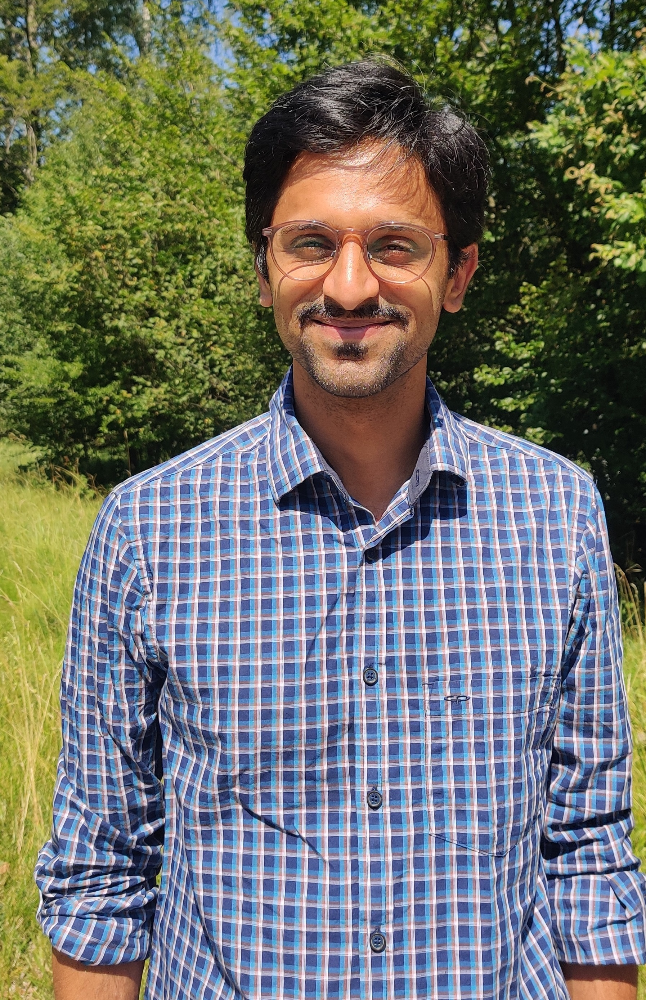
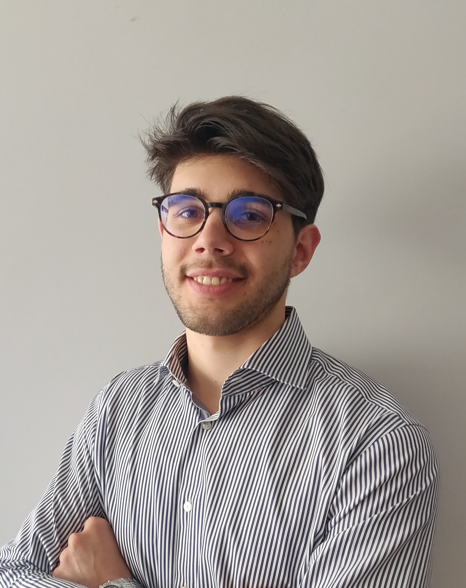

Members
Group leader
 Thejasvi Beleyur, Group Leader, homepage
Staff

Alberto Doimo, Technical Assistant.
Development of the Ro-BAT active-sensing robotics platform.
PhD candidates
We are looking for PhD candidates - see openings here
Postdocs
We are looking for postdocs - see openings here
Masters students
- Gabriele Baroli (2024-25): Masters thesis (Music & Acoustic Engineering, Politecnico Milano) 2024-25. Building the active-sensing V2 Ro-BAT.
Alumni
- Alberto Doimo (2024): Masters thesis in Music & Acoustic Engineering, Politecnico Milano) . Building the passive sensing V1 Ro-BAT.
- Julian Jandeleit (2022-23): Bachelors thesis in Computer Science, Uni. Konstanz. Multi-sensor alignment of featureless thermal and LiDAR cave scenes.
- Giray Tandoğan (2021) : Masters thesis in Computer & Information Science, Uni. Konstanz. Multi-animal, multi-camera tracking and correspondence matching.
Collaborators
None of this work happens in a vacuum. Here is the scientific community around our research projects:
Computer vision
- Bastian Goldluecke (Uni. Konstanz)
Source localisation in complex audio
- Kalle Åström (Uni. Lund)
Swarm robotics
- Giovanni Reina (Uni. Konstanz)
- Heiko Hamann (Uni. Konstanz)
Animal collective behaviour
- Iain Couzin (Uni. Konstanz/MPI Animal Behavior)
Bio-acoustics
- Henrik Brumm (MPI-Biological Intelligence, Seewiesen)
- Holger R Goerlitz (MPI-Biological Intelligence, Seewiesen)